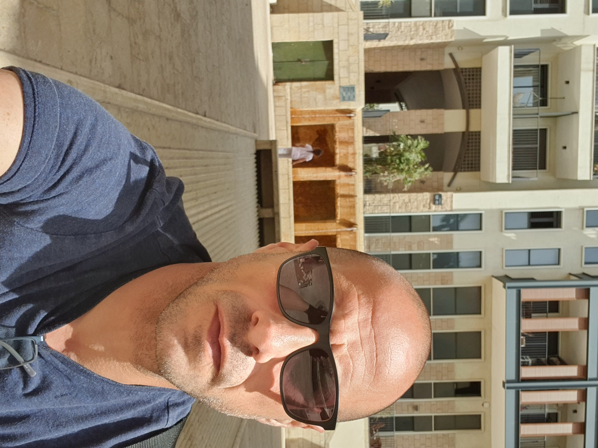

קצת עליי

שמי שחר אוחיון, ואני מומחה למערכות מידע המתגורר בצפון היפהפה של ישראל. אני עוסק בפיתוח פתרונות טכנולוגיים מגוונים, החל מאתרי תדמית ועד יישומי ענן מתקדמים. אני מאמין בלמידה מתמדת ועבודה קשה כדי להגיע למטרותיי. אני בעל ניסיון עשיר ורחב בתחום הסיסטם, תקשורת, מערכות מידע ומערכות IT.
קורות חיים
ת.ז. 036277432 • 050-2949593 • ohayonshahar@gmail.com
השכלה והכשרות
- 2019-2022: תואר B.A במערכות מידע, ממוצע 86
- 2017-2015: MCITP - Microsoft Certified IT Professional
- 2025: ניהול רשתות וענן AWS (הכשרה מעשית)
ניסיון תעסוקתי
-
2013-2025: מנהל רשת ו-IT בבתי ספר בקרית שמונה, הגליל העליון וחצור
- הענקת תמיכה טכנית, הדרכה והטמעה של מערכות חדשות בבית הספר
- ניהול ציוד קצה ומלאים (LAN, WAN, Wi-Fi, שרתים ותחנות קצה)
- התקנות, תחזוקה ותמיכה שוטפת למורים, תלמידים וצוותים חינוכיים
- ניהול הרשאות ומשתמשים ב-Active Directory
- פתרון תקלות חומרה/תוכנה, עבודה עם Linux, Windows Server
טכנולוגיות וכישורים
- מערכות הפעלה: Windows Server, Windows 10/11, Linux
- סביבות ענן: AWS (לימודים מעשיים)
- שפות פיתוח: SQL, Python, Java, HTML, CSS, Node.js
- ניהול רשתות ושרתים: Active Directory, DHCP, DNS
- אבטחת מידע: Fortigate
פרויקטים
- הקמת מעבדת שרתים מבוססת Proxmox ברשת ביתית עם גישה פנימית
- פיתוח אתר משפחתי דינמי מבוסס Apache ו-HTML
- הקמת שרת WebDAV מאובטח לגיבוי ושיתוף קבצים
שפות
- עברית (שפת אם)
- אנגלית (ברמה גבוהה)